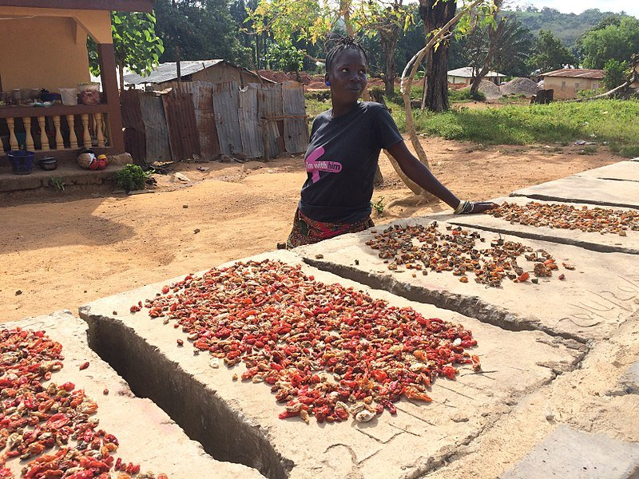

Get Involved

Community preservation thrives when people show up—with curiosity, care, and practical hands. Join us to learn, teach, and strengthen local food security.
Volunteer Opportunities

Workshop Support: Help set up, guide participants, and document steps for future learners.

Community Outreach: Share preservation knowledge at schools, gardens, and neighborhood events.

Resource Logistics: Organize jars, labels, and safe storage for community kitchens.

Mentor Circle: Pair with learners to practice methods and build confidence.
Event Calendar

Monthly Skills Sessions: Hands‑on classes covering fermentation, drying, and canning.

Seasonal Harvest Days: Preserve surplus produce and distribute jars to families.

Safety Clinics: Focused sessions on cleanliness, sealing, and storage.